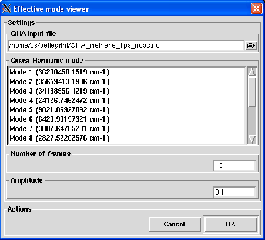

Next: The Help menu
Up: The View menu
Previous: Animation
Contents
Effective mode
This option allows one to visualize the results of a QHA analysis (see Section 4.2.4.12) as an animation of a selected
effective mode coming out the analysis using VMD. To do so, VMD must be installed and the preferences variables
vmd_path storing the path for VMD reader executable must be correctly set.
Pressing the Effective mode viewer button will pop up the dialog shown on figure 4.68
Figure 4.68:
The dialog from where a the pseudo-trajectory associated to a selected effective
can be animated using VMD
|

|
The following input fields controls the parameters necessary to visualize the animation through VMD:
- QHA input file
Format: string
Default: the name of the QHA analysis output file if one such file is already currently loaded. Nothing otherwise
Description: this widget allows to select the name of the QHA analysis output file to visualize.
- Quasi-Harmonic mode
Format: not an editable entry
Default: no effective mode selected
Description: this widget allows to select which combination of effective modes to visualize.
- Number of frames
Format: strictly positive integer
Default: 10 if one QHA file is currently loaded. Nothing otherwise
Description: this widget allows to specify the number of frames the pseudo-trajectory should contain.
Calling VMD from nMOLDYN is quite time-consuming, the entered value should not be too high.
- Amplitude
Format: strictly positive float
Default: 0.1 if one QHA file is currently loaded. Nothing otherwise
Description: this widget allows to specify the amplitude in nm of the motion associated to the selected
effective mode (see Eq. 4.109).
Pressing the OK button will run the animation, pressing the Cancel button will close the dialog.
Next: The Help menu
Up: The View menu
Previous: Animation
Contents
pellegrini eric
2009-10-06